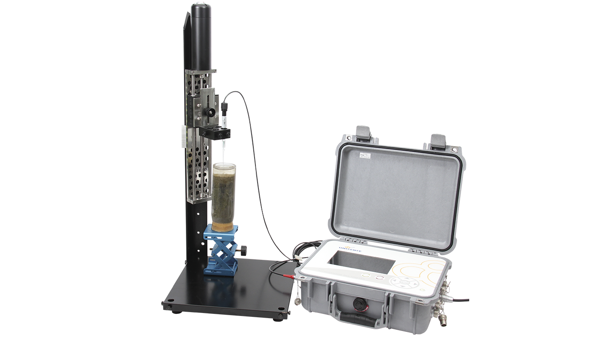
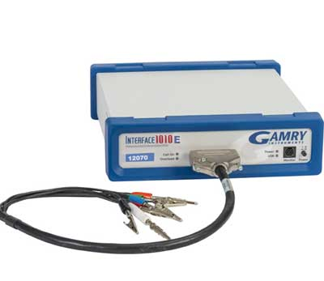
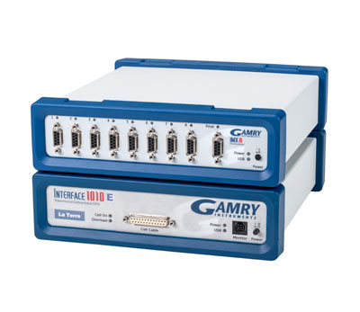
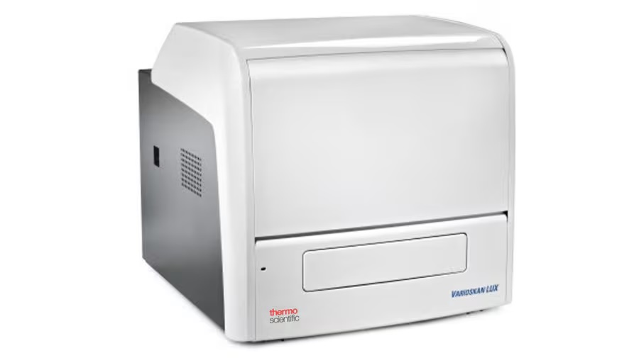
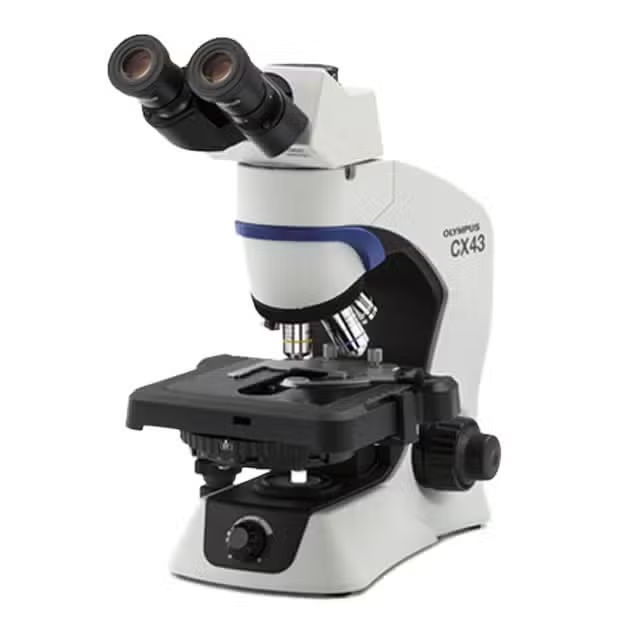
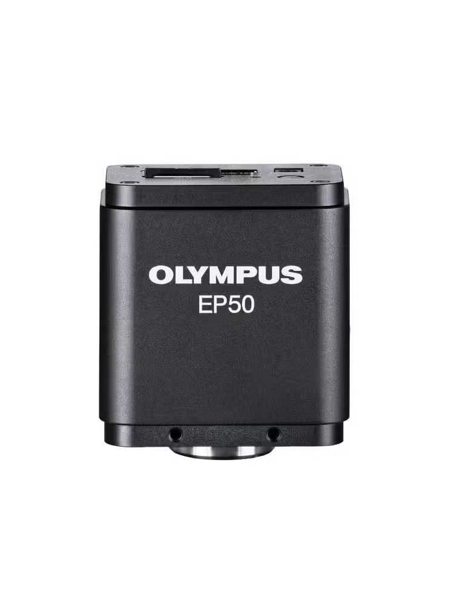

Lab Instrumentation
The Electrobiotech Lab maintains instrumentation for in situ sediment microprofiling, electrochemical characterization of electroactive biofilms and bioelectrochemical systems, multimode microplate assays, and light microscopy. The instruments below are available to lab members and, by arrangement, to collaborators within Oregon State University. Each entry lists the manufacturer's product page for full specifications.
To arrange access to any instrument other than the CX43 microscope, please contact Dr. Cheng Li. The CX43 microscope is available on a self-service basis; every session must be recorded in the microscope usage log.

UnisenseUnisense Field MicroProfiling System
Unisense A/S · Manufacturer page
A field-deployable microsensor profiling system for resolving vertical chemical gradients in sediments, biofilms, and microbial mats at micrometre scale. The package combines a water-resistant eight-channel Field Microsensor Multimeter (five pA channels, two mV channels, one temperature channel, with onboard datalogging and battery) and a waterproof motorized Field Motor micromanipulator with 10 µm step resolution that can profile with up to six sensors simultaneously.
- Microsensors supported: O2, H2S, pH, redox potential, temperature, N2O, H2, NO
- In situ profiling in shallow water and wetland sediments, or on retrieved cores in the lab
- Programmable profiling protocols and on-site calibration; data export to uSense Solutions
If you would like to use this instrument, please contact Dr. Cheng Li for more information.

Gamry 1010EGamry Interface 1010E Potentiostat
Gamry Instruments · Manufacturer page
A full-featured research potentiostat/galvanostat/ZRA used for poising and characterizing electroactive biofilms and bioelectrochemical reactors. It supports the complete suite of DC and AC techniques, including chronoamperometry, cyclic voltammetry, pulse voltammetry, and electrochemical impedance spectroscopy, and is floating (isolated from earth ground) so it can be used with grounded reactors and field probes without ground-loop artefacts.
- Maximum current ±1 A; compliance voltage ±20 V
- EIS from 10 µHz to 2 MHz
- Gamry Framework / Echem Analyst software
If you would like to use this instrument, please contact Dr. Cheng Li for more information.

Gamry 1010T + IMX8Gamry Interface 1010T Potentiostat with IMX8 Electrochemical Multiplexer
Gamry Instruments · Interface 1010T · IMX8 Multiplexer
The Interface 1010T is an entry-level potentiostat suited to teaching labs and routine monitoring, with the same software environment as the 1010E. Paired with the IMX8 eight-channel multiplexer, it sequentially polls up to eight independent electrochemical cells, which makes it well suited to long-term, periodic measurements across replicate microbial fuel cells, enrichment reactors, or sensor electrodes. Each IMX8 channel includes a local potentiostat that keeps inactive cells polarized between measurements.
- 1010T: maximum current ±100 mA; applied potential ±5 V; potentiostatic EIS to 20 kHz
- IMX8: eight channels, sequential (not simultaneous) measurement; inactive channels held at set potential
- Suitable for student projects and replicate reactor arrays
If you would like to use this instrument, please contact Dr. Cheng Li for more information.

Varioskan LUXVarioskan LUX Multimode Microplate Reader
Thermo Scientific · Manufacturer page
A monochromator-based multimode plate reader for absorbance, fluorescence intensity, luminescence, time-resolved fluorescence, and AlphaScreen measurements. In the lab it supports growth curves, colorimetric and fluorometric assays (e.g., protein, nucleic acid, enzyme activity, redox-dye assays), and plate-based screening of culture conditions.
- Absorbance 200–1,000 nm; fluorescence excitation 200–822 nm / emission 270–840 nm (double monochromators)
- 6- to 384-well plates for absorbance and fluorescence; up to 1,536-well for luminescence
- Top and bottom reading; SkanIt software
If you would like to use this instrument, please contact Dr. Cheng Li for more information.

CX43 + EP50
Evident CX43 Microscope with Phase Contrast and EP50 Camera
Evident (Olympus) · CX43 · EP50 camera
An upright LED-illuminated microscope with plan achromat objectives and a universal condenser configured for brightfield and phase contrast, fitted with a 22FN observation head. The EP50 is a 5-megapixel colour CMOS camera with HDMI, WLAN, and Ethernet output; it can run standalone with a monitor and mouse, or stream to the EPview app on a laptop or phone.
- Brightfield and phase contrast; objectives from 4× to 100× oil immersion
- EP50: 2592 × 1944 snapshots, 1080p live view, up to 60 fps over HDMI
- Typical uses: live and fixed cultures, enrichment samples, sediment and biofilm smears, cable-bacteria filaments
Self-service instrument. Trained users may use the CX43 without prior arrangement, but every session must be recorded. Please fill in the usage log at the start of your session (you can submit the end time afterwards) and clean immersion oil from the objectives before leaving.
Open the microscope usage log →